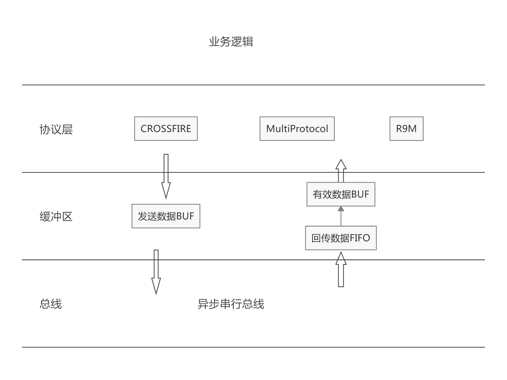

软件实现¶
术语规定¶
术语 |
描述 |
|---|---|
extern module |
在这里是指外部高频头模块,有时候也叫 module |
multiprotocl |
多协议高频头 |
pulse |
这里特指输出协议 |
telemetry |
遥测，回传 |
TBS |
黑羊高频头 |
crossfilre |
TBS的一种协议 |
程序整体架构¶
程序的主要工作在协议层的解包、打包和业务逻辑三大模块
数据结构设计¶
逻辑结构设计¶
FIFO¶
typedef struct{
void (*Fifo)(void);
void (*clear)(void);
void (*push)(uint8_t element);
bool (*pop)(uint8_t *element);
bool (*isEmpty)(void);
bool (*isFull)(void);
void (*flush)(void);
uint32_t (*size)(void);
uint32_t (*hasSpace)(uint32_t n);
bool (*probe)(uint8_t *element);
}FIFO;
FIFO结构体，用于遥测数据缓冲区数据的操作
TelemetrySensor¶
typedef struct{
union {
uint16_t id; // data identifier, for FrSky we can reuse existing ones. Source unit is derived from type.
uint16_t persistentValue;
}identifier;
union {
struct {
uint8_t physID:5;
uint8_t rxIndex:3; // 1 bit for module index, 2 bits for receiver index
}frskyInstance;
uint8_t instance; // instance ID to allow handling multiple instances of same value type, for FrSky can be the physical ID of the sensor
uint8_t formula;
}ins;
char label[TELEM_LABEL_LEN]; // user defined label
uint8_t subId; /*每种传感器不一样*/
uint8_t type:1; // 0=custom / 1=calculated // user can choose what unit to display each value in
uint8_t spare1:1;
uint8_t unit:6; /*精度*/
uint8_t prec:2; /*单位*/
uint8_t autoOffset:1;
uint8_t filter:1;
uint8_t logs:1; /*用于表示传感器数据是否存于外部存储*/
uint8_t persistent:1;
uint8_t onlyPositive:1;
uint8_t spare2:1;
union {
struct{
uint16_t ratio; /*比例*/
int16_t offset; /*偏移*/
}custom;
struct{
uint8_t source; /*数据源*/
uint8_t index;
uint16_t spare;
}cell;
struct{
int8_t sources[4];
}calc;
struct{
uint8_t source;
uint8_t spare[3];
}consumption;
struct{
uint8_t gps;
uint8_t alt;
uint16_t spare;
}dist;
uint32_t param;
}data;
}TelemetrySensor;
TelemetrySensor结构体存储遥测传感器解包得到的数据，这部分数据为用户可设置， 需要存储
每个传感器对应一个TelemetrySensor和 TelemetryItem
传感器的计算公式和类型不一样，设置的参数也有所区别，所以出现了data联合体
TelemetryItem¶
typedef struct{
union {
int32_t value; // value, stored as uint32_t but interpreted accordingly to type
uint32_t distFromEarthAxis;
}value;
union {
int32_t valueMin; // min store
int32_t pilotLongitude;
}min;
union {
int32_t valueMax; // max store
int32_t pilotLatitude;
}max;
uint8_t lastReceived; // for detection of sensor loss
union {
struct {
int32_t offsetAuto;
int32_t filterValues[TELEMETRY_AVERAGE_COUNT];
} std;
struct {
uint16_t prescale;
} consumption;
struct {
uint8_t count;
CellValue values[6];
} cells;
struct {
uint16_t year; // full year (4 digits)
uint8_t month;
uint8_t day;
uint8_t hour;
uint8_t min;
uint8_t sec;
} datetime;
struct {
int32_t latitude;
int32_t longitude;
// pilot longitude is stored in min
// pilot latitude is stored in max
// distFromEarthAxis is stored in value
} gps;
char text[16];
}telemetry;
}TelemetryItem;
TelemetryItem结构体，这部分数据是传感器的实时数值，不需要关机保存.
每个传感器对应一个TelemetryItem和 TelemetrySensor
每个传感器包含的数值信息不一样，所以这里使用了联合体
ModuleData¶
typedef struct {
uint8_t type:4;
// TODO some refactoring is needed, rfProtocol is only used by DSM2 and MULTI, it could be merged with subType
int8_t rfProtocol:4;
uint8_t channelsStart;
int8_t channelsCount; // 0=8 channels
uint8_t failsafeMode:4; // only 3 bits used
uint8_t subType:3;
uint8_t invertedSerial:1; // telemetry serial inverted from standard
int8_t rxNum; /*自己添加*/
union {
struct {
int8_t delay:6;
uint8_t pulsePol:1;
uint8_t outputType:1; // false = open drain, true = push pull
int8_t frameLength;
} ppm;
struct {
uint8_t rfProtocolExtra:3;
uint8_t disableTelemetry:1;
uint8_t disableMapping:1;
uint8_t customProto:1;
uint8_t autoBindMode:1;
uint8_t lowPowerMode:1;
int8_t optionValue;
uint8_t receiverTelemetryOff:1;
uint8_t receiverHigherChannels:1;
uint8_t spare:6;
} multi;
struct {
uint8_t power:2; // 0=10 mW, 1=100 mW, 2=500 mW, 3=1W
uint8_t spare1:2;
uint8_t receiverTelemetryOff:1; // false = receiver telem enabled
uint8_t receiverHigherChannels:1; // false = pwm out 1-8, true 9-16
int8_t antennaMode:2;
uint8_t spare2;
} pxx;
struct {
uint8_t spare1:6;
uint8_t noninverted:1;
uint8_t spare2:1;
int8_t refreshRate; // definition as framelength for ppm (* 5 + 225 = time in 1/10 ms)
} sbus;
struct {
uint8_t receivers; // 5 bits spare
// char receiverName[PXX2_MAX_RECEIVERS_PER_MODULE][PXX2_LEN_RX_NAME];
} pxx2;
}plus;
}ModuleData;
用于存储用户对高频头的设置
每种高频头协议不一样，所以能够设置的选项也有区别，但同时只能使用一种高频头，所以 使用来联合体
ExternalModulePulsesData¶
typedef union {
#if defined(PXX1)
#if defined(HARDWARE_EXTERNAL_MODULE_SIZE_SML)
UartPxx1Pulses pxx_uart;
#endif
#if defined(PPM_PIN_SERIAL)
SerialPxx1Pulses pxx;
#else
PwmPxx1Pulses pxx;
#endif
#endif
#if defined(PXX2)
Pxx2Pulses pxx2;
#endif
Dsm2PulsesData dsm2;
// PpmPulsesData<pulse_duration_t> ppm;
CrossfirePulsesData crossfire;
}ExternalModulePulsesData;// __ALIGNED(4);
ExternalModulePulsesData结构体存储数据打包的数据
外部模块支持多种高频头，每个都高频头协议格式不一样，每次只能支持一种外部高频头 所以使用了联合体封装高频头协议
物理结构设计¶
都是线性存储
运行设计¶
程序主要由数据打包发送、解包和业务逻辑三个模块组成。
业务逻辑就是根据用户对传感器的设置进行相关的运行
运行模块的组合¶
解包和业务逻辑放在同一周期执行，打包发送在另外一个周期执行
运行控制¶
解包和业务逻辑¶
void telemetryWakeup(void)
{
uint8_t data;
uint8_t requiredTelemetryProtocol;
static tmr10ms_t alarmsCheckTime = 0;
/*获取遥测协议的类型*/
requiredTelemetryProtocol = modelTelemetryProtocol();
/*遥测协议类型与当前不一致，重新初始化遥测*/
if (telemetryProtocol != requiredTelemetryProtocol) {
telemetryInit(requiredTelemetryProtocol);
}
/*判断缓冲区是否由数据*/
if (telemetryGetByte(&data)) {
LOG_TELEMETRY_WRITE_START();
/*处理遥测数据，直到缓冲区没有数据*/
do {
/*处理一帧遥测数据*/
processTelemetryData(data);
LOG_TELEMETRY_WRITE_BYTE(data);
} while (telemetryGetByte(&data));
}
for (int i=0; i<MAX_TELEMETRY_SENSORS; i++) {
TelemetrySensor * sensor = sensor_get_object(i);
TelemetryItem * item = &telemetryItems[i];
if (sensor->type == TELEM_TYPE_CALCULATED) {
/*根据用户设置对传感器数值进行计算*/
telemetry_item_eval(item, sensor);
}
}
}
运行时间¶
对于TBS外部高频头的回传数据最快4ms一个周期，传输26个字节，多协议高频头 也差不多，设计缓存区最大缓存区的设计存储量128个字节,所以*telemetryWakeup()* 应该小于4ms执行一次，否则会导致处理上丢帧。
对于数据打包发送的周期，理论上混控计算时间要小于发送的周期，否则会不能发挥出 外置高频头的最高性能。发射的周期精度为MS